library(ISLR2)
attach(Wage)Chapter 7: Moving Beyond Linearity
Polynomial regression
Step functions
Regression splines
Smoothing splines
Local regression
Generalized additive models
Basis Functions
Polynomial and piecewise-constant regression models are in fact special cases of a basis function approach, a family of functions or transformations that can be applied to a variable.
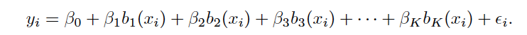
Hence, we can use least squares.
Polynomial Regression
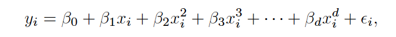
Step Functions
Break the range of X into bins to convert a continuous variable into an ordered categorical variable.
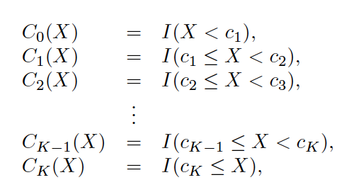
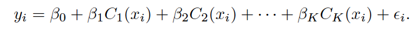
Regression Splines
Piecewise Polynomials
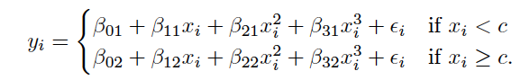
The problem is the function is discontinuous around knots.
Constraints and Splines
Constraints:
the fitted curve must be continuous.
Both the first and second derivatives of the piecewise polynomials are continuous at knots ( except a linear spline).
The Spline Basis Representation

E.g., for a cubic polynomial, add one truncated power basis function per knot as follows.
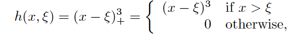
where \(\xi\) is the knot.
Then, the first and second derivatives at each of the knots will remain continuous.
The number of predictors is $3+K$, i.e., \(X, X^2, X^3, h(X,\xi_1), h(X,\xi+2),...,h(X,\xi_K)\).
With the intercept in addition to these predictors, the number of coefficients is \(K+4\), i.e., \(K+4\) degrees of freedom.
Splines can have high variance at the outer range of the predictors.
Choosing the Number and Locations of the Knots
In practice, it is common to place knots in a uniform fashion.
To determine the number of knots or degrees of freedom, cross-validation works well.
Comparison to Polynomial Regression
Regression splines often give superior results to polynomial regression. Regression splines, which increase the number of knots but keep the degree fixed, produce more stable estimates.
Smoothing Splines
The function g that minimizes the following value is called smoothing splines, which makes RSS small but also the regression line smooth.
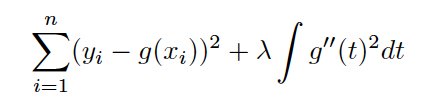
where \(\lambda\) is nonnegative.
If \(\lambda \rightarrow \infty\), the regression line becomes a straight line.
Smoothing splines is a shrunken version of a natural cubic spline with the region outside of the extreme knots perfectly linear.
Choosing the Smoothing Parameter \(\lambda\)
Degrees of freedom: the number of free parameters
Effective degrees of freedom \(df_\lambda\): a measure of the flexibility of the smoothing spline.
\[ \hat{g}_\lambda = S_\lambda y \]
\(\hat{g}_\lambda\) indicates the fitted value of the smoothing spline.
\(S_\lambda\) is an n x n matrix.
Then, the effective degrees of freedom is defined as
\[ df_\lambda = \sum_{i=1}^{n} \{S_\lambda\}_{ii} \]
To choose \(\lambda\), cross-validation works. Especially, LOOCV can be computed very efficiently for smoothing splines.
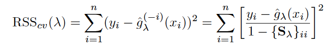
\(\hat{g}_\lambda ^{(-i)}(x_i)\) indicates the fitted value for the smoothing spline evaluated at \(x_i\), where the fit uses all the training data except for the ith observation.
Local Regression
Fit a target point \(x_0\) using only the nearby training observations.
Gather the fraction \(s=k/n\) of training points whose \(x_i\) are closest to \(x_0\).
Assign a weight \(K_{i0} = K(x_i, x_0)\) to each point, so that the point furthest from \(x_0\) has weight zero and the closest has the highest weight.
Fit a weighted least squares regression:
- 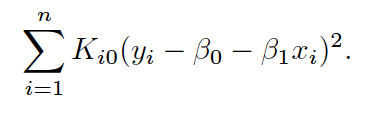
The fitted value at \(x_0\) is give by \(\hat{f}(x0) = \hat{\beta_0} + \hat{\beta_1} x_0\).
The span s plays a significant role to determine smoothness. The larger s will lead to a global filt to the data using all of the training data.
To choose s, cross-validation works.
Generalized Additive Models (GAM)
Quantitive Regression
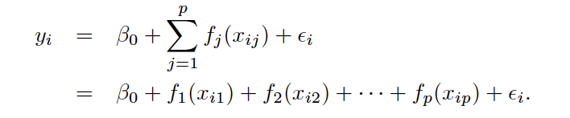
Qualitative Classification
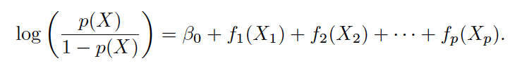
Lab
Polynomial Regression
fit <- lm(wage ~ poly(age , 4), data = Wage)
coef(summary(fit)) Estimate Std. Error t value Pr(>|t|)
(Intercept) 111.70361 0.7287409 153.283015 0.000000e+00
poly(age, 4)1 447.06785 39.9147851 11.200558 1.484604e-28
poly(age, 4)2 -478.31581 39.9147851 -11.983424 2.355831e-32
poly(age, 4)3 125.52169 39.9147851 3.144742 1.678622e-03
poly(age, 4)4 -77.91118 39.9147851 -1.951938 5.103865e-02The poly function returns a matrix whose columns are a basis of orthogonal polynomials, which essentially means that each column is a linear combination of the variables age, age^2, age^3, and age^4.
fit2 <- lm(wage ~ poly(age , 4, raw = T), data = Wage)
coef(summary(fit2)) Estimate Std. Error t value Pr(>|t|)
(Intercept) -1.841542e+02 6.004038e+01 -3.067172 0.0021802539
poly(age, 4, raw = T)1 2.124552e+01 5.886748e+00 3.609042 0.0003123618
poly(age, 4, raw = T)2 -5.638593e-01 2.061083e-01 -2.735743 0.0062606446
poly(age, 4, raw = T)3 6.810688e-03 3.065931e-03 2.221409 0.0263977518
poly(age, 4, raw = T)4 -3.203830e-05 1.641359e-05 -1.951938 0.0510386498fit2a <- lm(wage ~ age + I(age^2) + I(age^3) + I(age^4), data = Wage)
coef(fit2a) (Intercept) age I(age^2) I(age^3) I(age^4)
-1.841542e+02 2.124552e+01 -5.638593e-01 6.810688e-03 -3.203830e-05 fit2b <- lm(wage ~ cbind(age , age^2, age^3, age^4), data = Wage)
coef(fit2b) (Intercept) cbind(age, age^2, age^3, age^4)age
-1.841542e+02 2.124552e+01
cbind(age, age^2, age^3, age^4) cbind(age, age^2, age^3, age^4)
-5.638593e-01 6.810688e-03
cbind(age, age^2, age^3, age^4)
-3.203830e-05 agelims <- range(age)
age.grid <- seq(from = agelims[1], to = agelims [2])
preds <- predict(fit , newdata = list(age = age.grid), se = TRUE)
se.bands <- cbind(preds$fit + 2 * preds$se.fit, preds$fit - 2 * preds$se.fit)par(mfrow = c(1, 2), mar = c(4.5 , 4.5, 1, 1), oma = c(0, 0, 4, 0))
plot(age , wage , xlim = agelims , cex = .5, col = "darkgrey")
title("Degree -4 Polynomial", outer = T)
lines(age.grid, preds$fit , lwd = 2, col = "blue")
matlines(age.grid , se.bands, lwd = 1, col = "blue", lty = 3)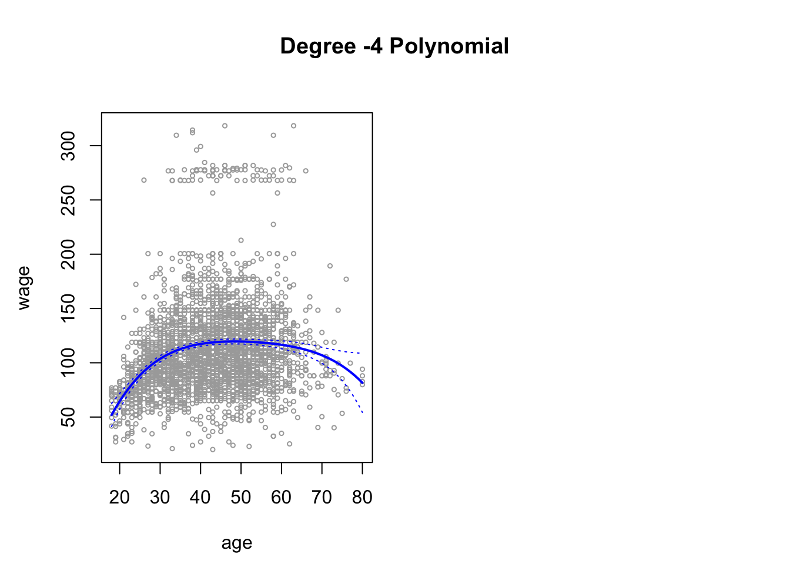
The predictions by fit and fit2 are identical.
preds2 <- predict(fit2 , newdata = list(age = age.grid), se = TRUE)
max(abs(preds$fit - preds2$fit))[1] 7.81597e-11fit.1 <- lm(wage ~ age , data = Wage)
fit.2 <- lm(wage ~ poly(age , 2), data = Wage)
fit.3 <- lm(wage ~ poly(age , 3), data = Wage)
fit.4 <- lm(wage ~ poly(age , 4), data = Wage)
fit.5 <- lm(wage ~ poly(age , 5), data = Wage)
anova(fit.1, fit.2, fit.3, fit.4, fit.5)Analysis of Variance Table
Model 1: wage ~ age
Model 2: wage ~ poly(age, 2)
Model 3: wage ~ poly(age, 3)
Model 4: wage ~ poly(age, 4)
Model 5: wage ~ poly(age, 5)
Res.Df RSS Df Sum of Sq F Pr(>F)
1 2998 5022216
2 2997 4793430 1 228786 143.5931 < 2.2e-16 ***
3 2996 4777674 1 15756 9.8888 0.001679 **
4 2995 4771604 1 6070 3.8098 0.051046 .
5 2994 4770322 1 1283 0.8050 0.369682
---
Signif. codes: 0 '***' 0.001 '**' 0.01 '*' 0.05 '.' 0.1 ' ' 1The cubic model fit.3 seems the best.
coef(summary(fit.5)) Estimate Std. Error t value Pr(>|t|)
(Intercept) 111.70361 0.7287647 153.2780243 0.000000e+00
poly(age, 5)1 447.06785 39.9160847 11.2001930 1.491111e-28
poly(age, 5)2 -478.31581 39.9160847 -11.9830341 2.367734e-32
poly(age, 5)3 125.52169 39.9160847 3.1446392 1.679213e-03
poly(age, 5)4 -77.91118 39.9160847 -1.9518743 5.104623e-02
poly(age, 5)5 -35.81289 39.9160847 -0.8972045 3.696820e-01fit.1 <- lm(wage ~ education + age , data = Wage)
fit.2 <- lm(wage ~ education + poly(age , 2), data = Wage)
fit.3 <- lm(wage ~ education + poly(age , 3), data = Wage)
anova(fit.1, fit.2, fit.3)Analysis of Variance Table
Model 1: wage ~ education + age
Model 2: wage ~ education + poly(age, 2)
Model 3: wage ~ education + poly(age, 3)
Res.Df RSS Df Sum of Sq F Pr(>F)
1 2994 3867992
2 2993 3725395 1 142597 114.6969 <2e-16 ***
3 2992 3719809 1 5587 4.4936 0.0341 *
---
Signif. codes: 0 '***' 0.001 '**' 0.01 '*' 0.05 '.' 0.1 ' ' 1fit <- glm(I(wage > 250) ~ poly(age , 4), data = Wage, family = binomial)preds <- predict(fit , newdata = list(age = age.grid), se = T)pfit <- exp(preds$fit) / (1 + exp(preds$fit))
se.bands.logit <- cbind(preds$fit + 2 * preds$se.fit, preds$fit - 2 * preds$se.fit)
se.bands <- exp(se.bands.logit) / (1 + exp(se.bands.logit))preds <- predict(fit , newdata = list(age = age.grid), type = "response", se = T)plot(age , I(wage > 250), xlim = agelims , type = "n", ylim = c(0, .2))
points(jitter(age), I(( wage > 250) / 5), cex = .5, pch = "|", col = "darkgrey")
lines(age.grid, pfit , lwd = 2, col = "blue")
matlines(age.grid , se.bands , lwd = 1, col = "blue", lty = 3)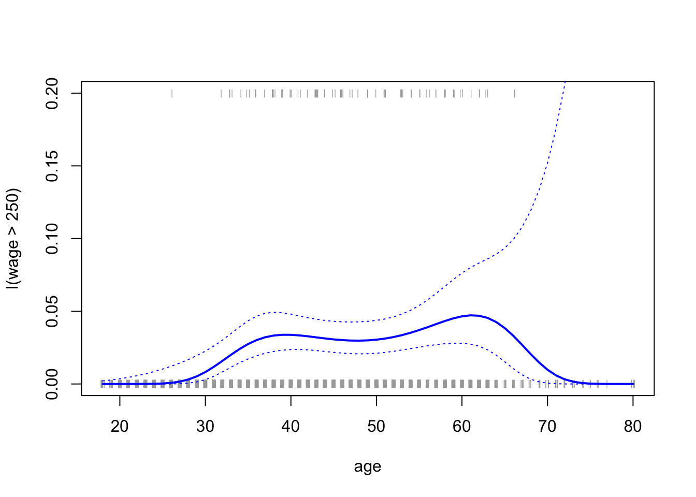
Step Functions
table(cut(age , 4))
(17.9,33.5] (33.5,49] (49,64.5] (64.5,80.1]
750 1399 779 72 fit <- lm(wage ~ cut(age , 4), data = Wage)
coef(summary(fit)) Estimate Std. Error t value Pr(>|t|)
(Intercept) 94.158392 1.476069 63.789970 0.000000e+00
cut(age, 4)(33.5,49] 24.053491 1.829431 13.148074 1.982315e-38
cut(age, 4)(49,64.5] 23.664559 2.067958 11.443444 1.040750e-29
cut(age, 4)(64.5,80.1] 7.640592 4.987424 1.531972 1.256350e-01library(splines)
fit <- lm(wage ~ bs(age , knots = c(25, 40, 60)), data = Wage)
pred <- predict(fit , newdata = list(age = age.grid), se = T)
plot(age , wage , col = "gray")
lines(age.grid, pred$fit , lwd = 2)
lines(age.grid , pred$fit + 2 * pred$se, lty = "dashed")
lines(age.grid , pred$fit - 2 * pred$se, lty = "dashed")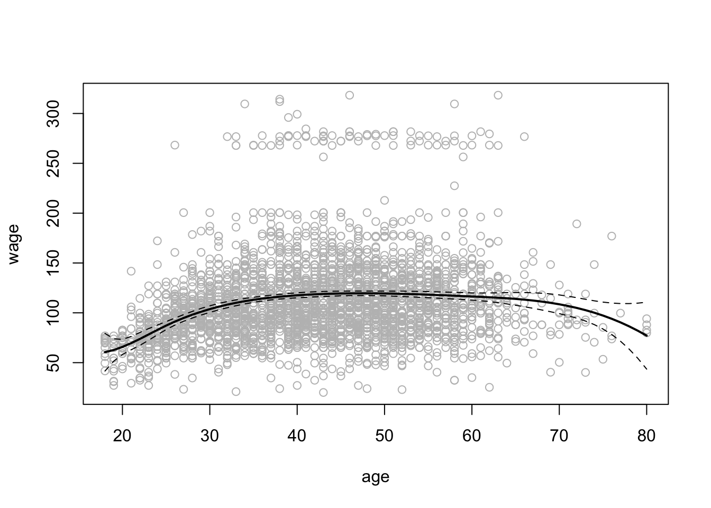
The bs function generates the entire matrix of basis function for splines with the specified set of knots.
dim(bs(age , knots = c(25, 40, 60)))[1] 3000 6dim(bs(age , df = 6))[1] 3000 6attr(bs(age , df = 6), "knots") 25% 50% 75%
33.75 42.00 51.00 fit2 <- lm(wage ~ ns(age , df = 4), data = Wage)
pred2 <- predict(fit2 , newdata = list(age = age.grid), se = T)
plot(age , wage , col = "gray")
lines(age.grid , pred2$fit , col = "red", lwd = 2)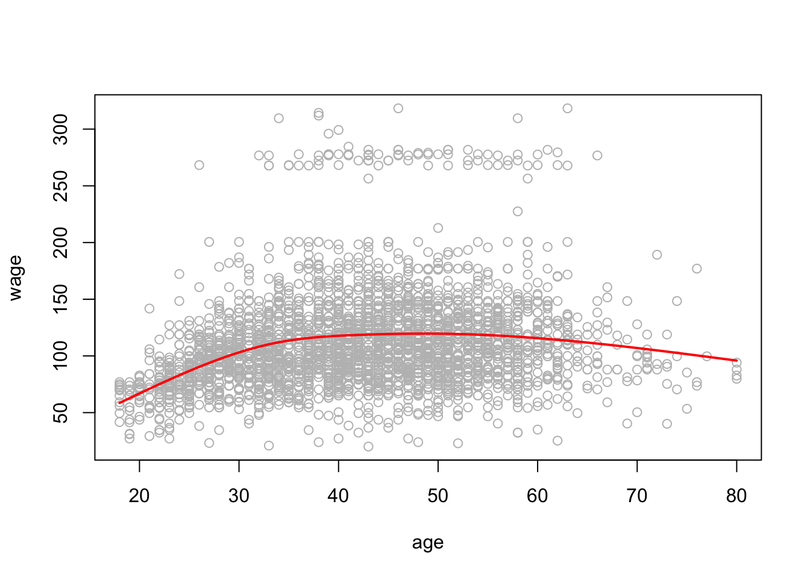
The ns function fits a natural spline.
plot(age , wage , xlim = agelims , cex = .5, col = "darkgrey")
title("Smoothing Spline")
fit <- smooth.spline(age , wage , df = 16)
fit2 <- smooth.spline(age , wage , cv = TRUE) # select the smoothness level by CVWarning in smooth.spline(age, wage, cv = TRUE): cross-validation with non-unique
'x' values seems doubtfulfit2$df[1] 6.794596lines(fit , col = "red", lwd = 2)
lines(fit2 , col = "blue", lwd = 2)
legend("topright", legend = c("16 DF", "6.8 DF"), col = c("red", "blue"), lty = 1, lwd = 2, cex = .8)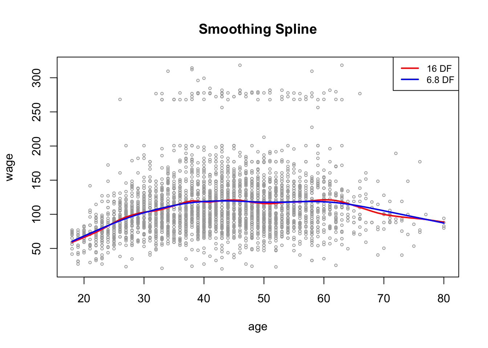
The smooth.spline() function fits a smoothing spline.
plot(age , wage , xlim = agelims , cex = .5, col = "darkgrey")
title("Local Regression")
fit <- loess(wage ~ age , span = .2, data = Wage)
fit2 <- loess(wage ~ age , span = .5, data = Wage)
lines(age.grid, predict(fit , data.frame(age = age.grid)), col = "red", lwd = 2)
lines(age.grid, predict(fit2 , data.frame(age = age.grid)), col = "blue", lwd = 2)
legend("topright", legend = c("Span = 0.2", "Span = 0.5"), col = c("red", "blue"), lty = 1, lwd = 2, cex = .8)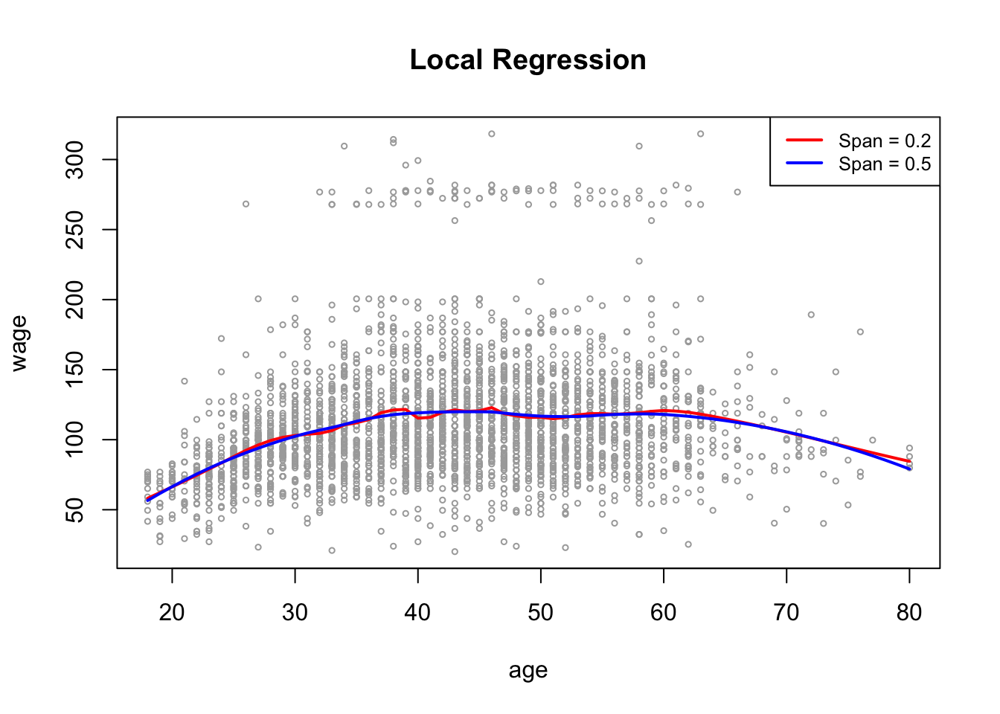
The loess() function performs local regression.
GAM
gam1 <- lm(wage ~ ns(year , 4) + ns(age , 5) + education , data = Wage)library(gam)Loading required package: foreachLoaded gam 1.20.2gam.m3 <- gam(wage ~ s(year , 4) + s(age , 5) + education , data = Wage)The s() function indicates a smoothing spline.
par(mfrow = c(1, 3))
plot(gam.m3, se = TRUE , col = "blue")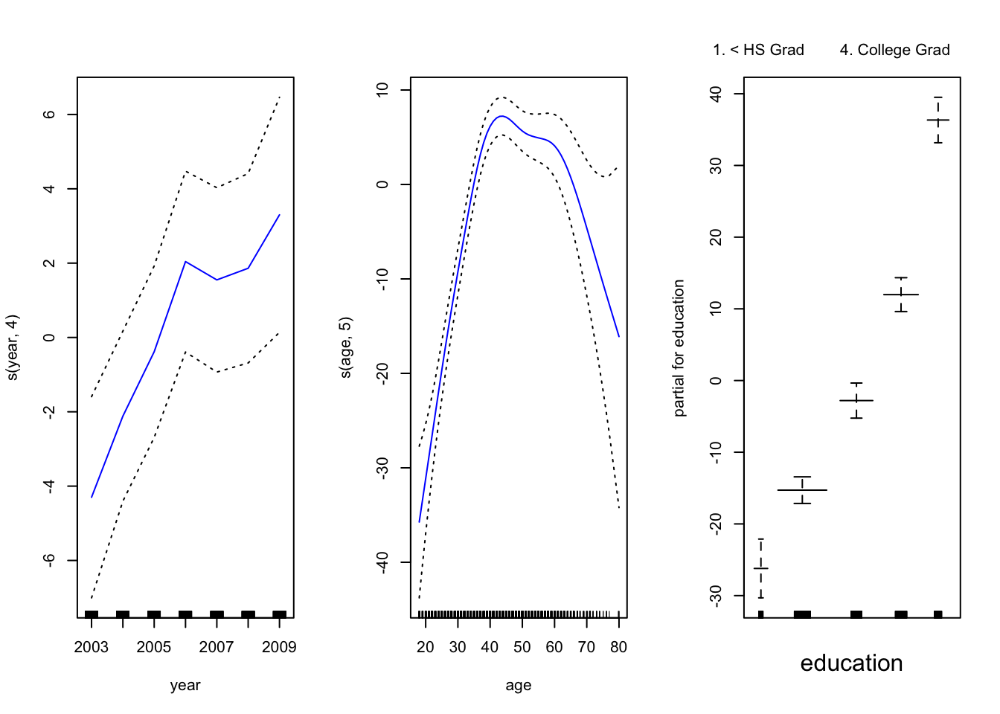
plot.Gam(gam1 , se = TRUE , col = "red")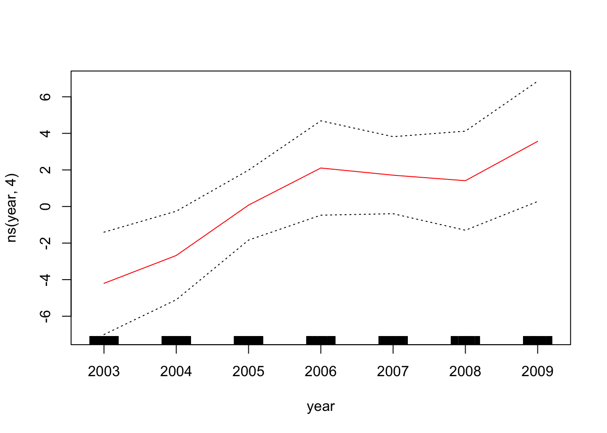
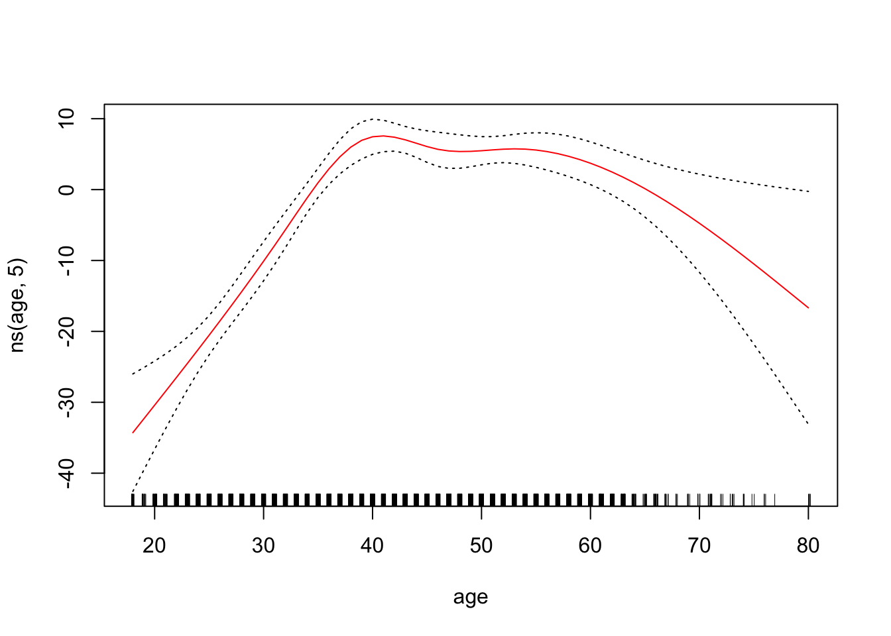
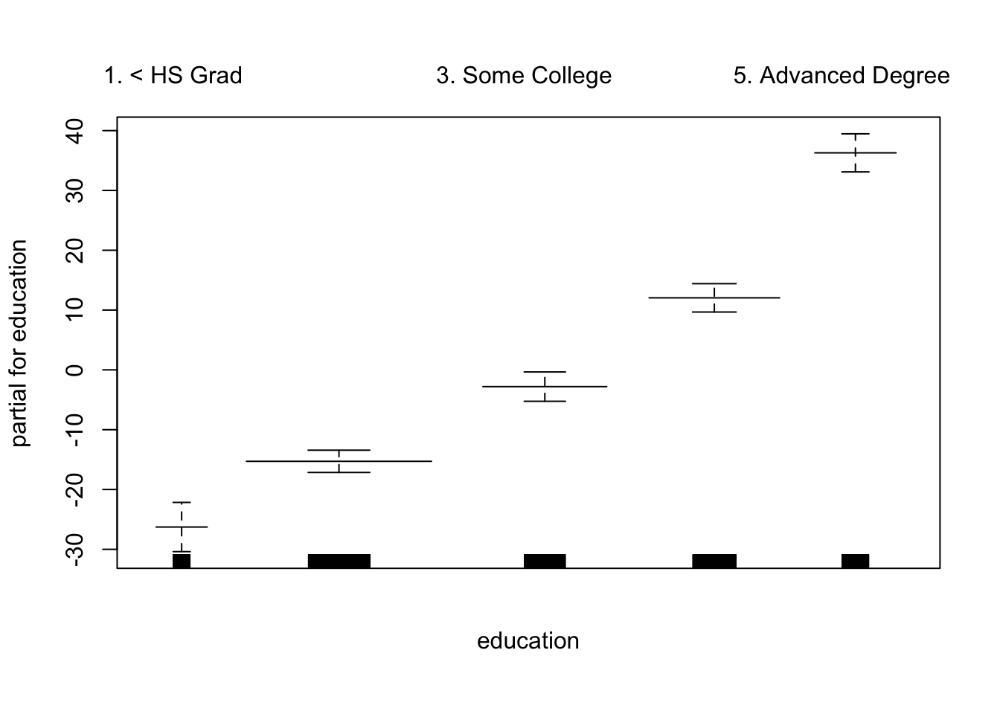
gam.m1 <- gam(wage ~ s(age , 5) + education , data = Wage)
gam.m2 <- gam(wage ~ year + s(age , 5) + education , data = Wage)
anova(gam.m1, gam.m2, gam.m3, test = "F")Analysis of Deviance Table
Model 1: wage ~ s(age, 5) + education
Model 2: wage ~ year + s(age, 5) + education
Model 3: wage ~ s(year, 4) + s(age, 5) + education
Resid. Df Resid. Dev Df Deviance F Pr(>F)
1 2990 3711731
2 2989 3693842 1 17889.2 14.4771 0.0001447 ***
3 2986 3689770 3 4071.1 1.0982 0.3485661
---
Signif. codes: 0 '***' 0.001 '**' 0.01 '*' 0.05 '.' 0.1 ' ' 1gam.m2 is preferred.
summary(gam.m3)
Call: gam(formula = wage ~ s(year, 4) + s(age, 5) + education, data = Wage)
Deviance Residuals:
Min 1Q Median 3Q Max
-119.43 -19.70 -3.33 14.17 213.48
(Dispersion Parameter for gaussian family taken to be 1235.69)
Null Deviance: 5222086 on 2999 degrees of freedom
Residual Deviance: 3689770 on 2986 degrees of freedom
AIC: 29887.75
Number of Local Scoring Iterations: NA
Anova for Parametric Effects
Df Sum Sq Mean Sq F value Pr(>F)
s(year, 4) 1 27162 27162 21.981 2.877e-06 ***
s(age, 5) 1 195338 195338 158.081 < 2.2e-16 ***
education 4 1069726 267432 216.423 < 2.2e-16 ***
Residuals 2986 3689770 1236
---
Signif. codes: 0 '***' 0.001 '**' 0.01 '*' 0.05 '.' 0.1 ' ' 1
Anova for Nonparametric Effects
Npar Df Npar F Pr(F)
(Intercept)
s(year, 4) 3 1.086 0.3537
s(age, 5) 4 32.380 <2e-16 ***
education
---
Signif. codes: 0 '***' 0.001 '**' 0.01 '*' 0.05 '.' 0.1 ' ' 1preds <- predict(gam.m2, newdata = Wage)gam.lo <- gam(
wage ~ s(year , df = 4) + lo(age , span = 0.7) + education ,
data = Wage
)
plot.Gam(gam.lo, se = TRUE , col = "green")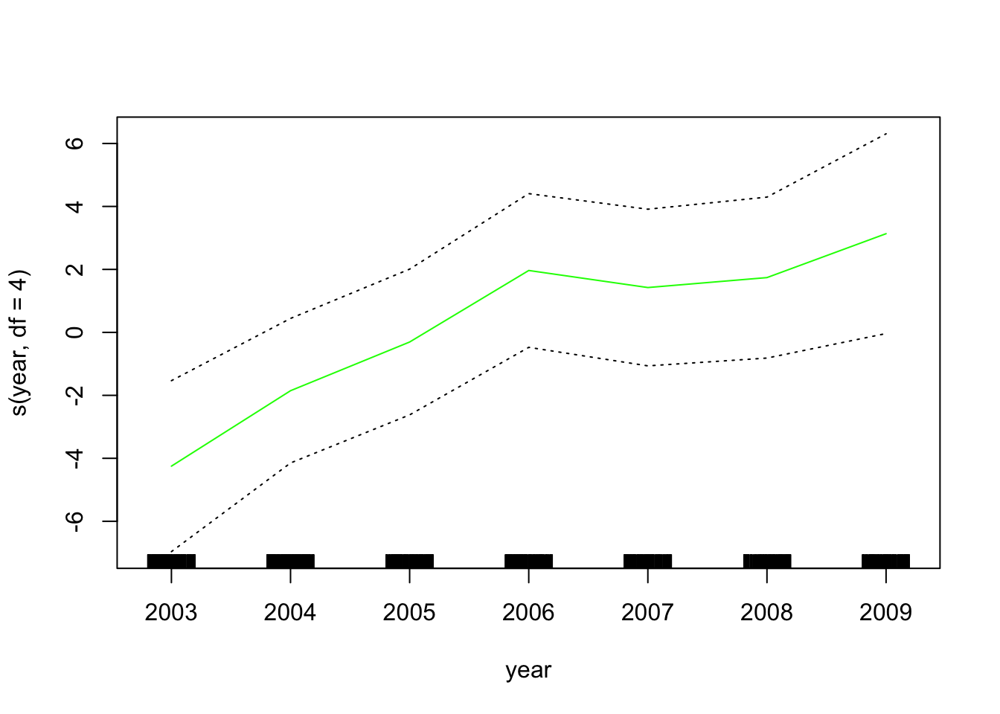
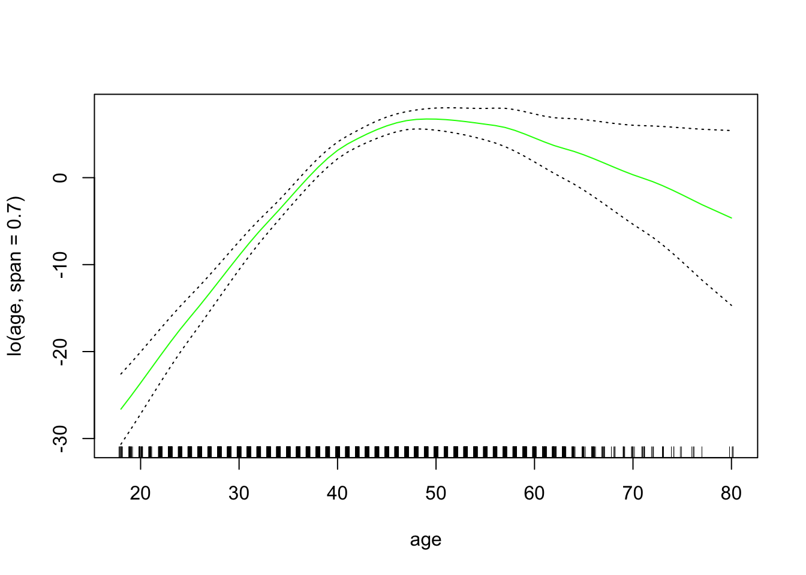
The lo() function performs local regression.
gam.lo.i <- gam(wage ~ lo(year , age , span = 0.5) + education , data = Wage)Warning in lo.wam(x, z, wz, fit$smooth, which, fit$smooth.frame, bf.maxit, : liv
too small. (Discovered by lowesd)Warning in lo.wam(x, z, wz, fit$smooth, which, fit$smooth.frame, bf.maxit, : lv
too small. (Discovered by lowesd)Warning in lo.wam(x, z, wz, fit$smooth, which, fit$smooth.frame, bf.maxit, : liv
too small. (Discovered by lowesd)Warning in lo.wam(x, z, wz, fit$smooth, which, fit$smooth.frame, bf.maxit, : lv
too small. (Discovered by lowesd)lo() can also be used to create interactions.
library(akima)
plot(gam.lo.i)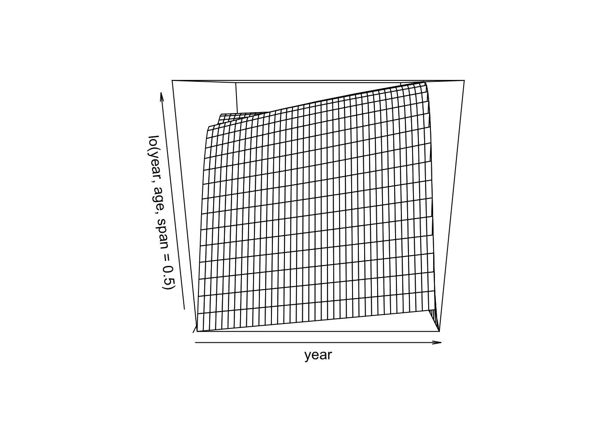
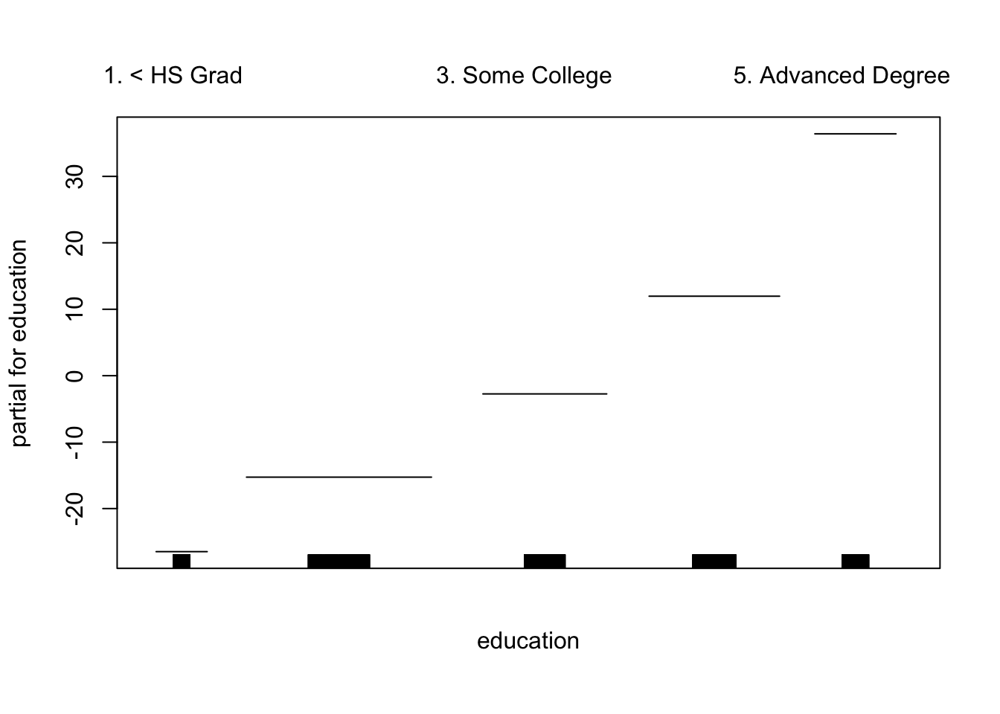
gam.lr <- gam(
I(wage > 250) ~ year + s(age , df = 5) + education ,
family = binomial , data = Wage
)
par(mfrow = c(1, 3))
plot(gam.lr, se = T, col = "green")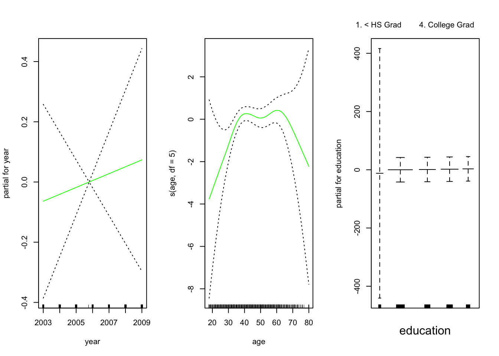
table(education , I(wage > 250))
education FALSE TRUE
1. < HS Grad 268 0
2. HS Grad 966 5
3. Some College 643 7
4. College Grad 663 22
5. Advanced Degree 381 45gam.lr.s <- gam(
I(wage > 250) ~ year + s(age , df = 5) + education ,
family = binomial , data = Wage ,
subset = (education != "1. < HS Grad")
)
par(mfrow = c(1, 3))
plot(gam.lr.s, se = T, col = "green")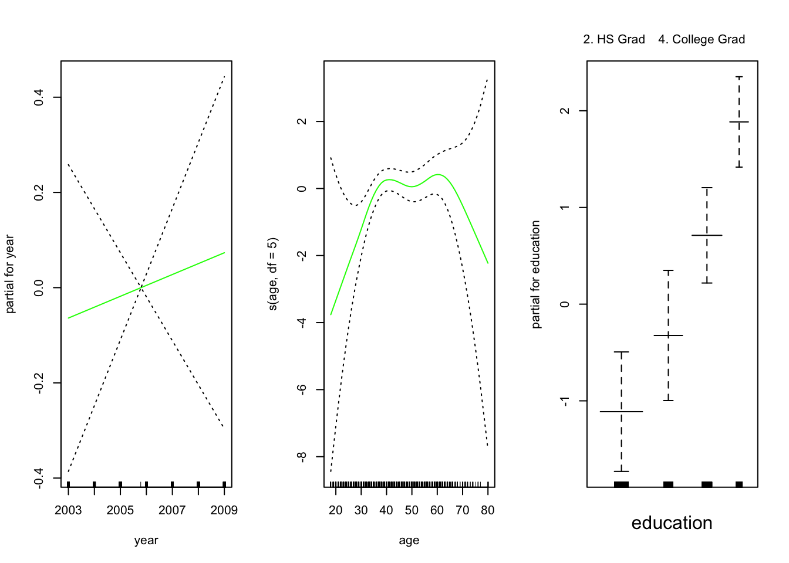